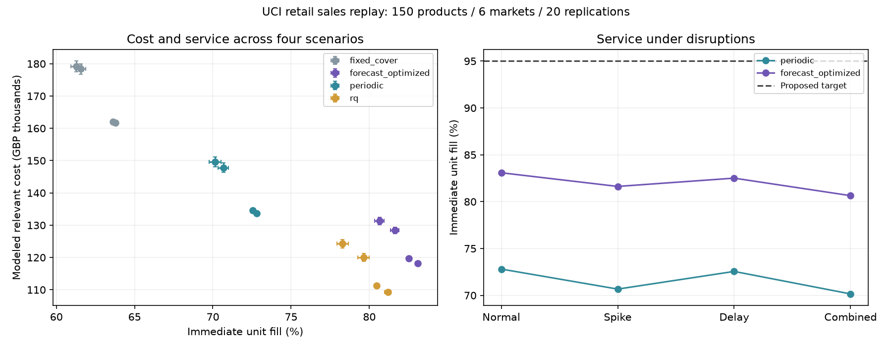
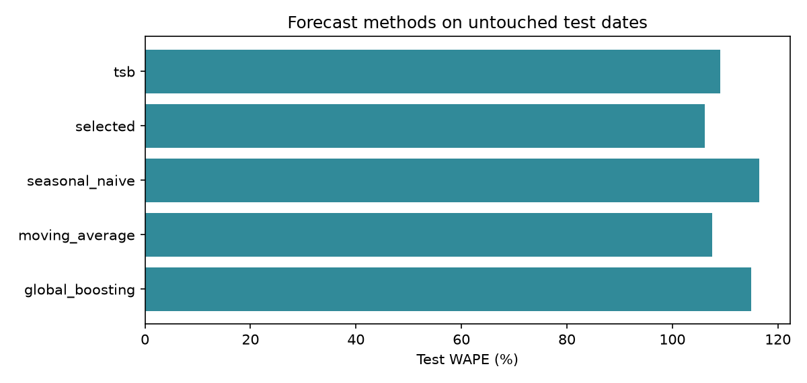

INVENTORY DECISION INTELLIGENCE · REAL-DATA CASE STUDY
Demand forecasting, constrained multi-echelon replenishment and planner decisions using UCI Online Retail II.
Observed sales from United Kingdom, EIRE, Netherlands, Germany, France, Australia. The proposed central warehouse and market hubs, supplier lead times, budgets and costs are planning assumptions.

| scenario | policy | relevant_cost_gbp | fill_rate | a_fill_rate | lost_units | average_inventory_units |
|---|---|---|---|---|---|---|
| combined | fixed_cover | 179,169.49 | 61.26 | 61.83 | 109,871.35 | 68,181.14 |
| combined | forecast_optimized | 131,286.71 | 80.64 | 81.41 | 54,917.50 | 107,478.73 |
| combined | periodic | 149,626.35 | 70.15 | 70.99 | 84,662.25 | 81,583.79 |
| combined | rq | 124,231.94 | 78.30 | 78.73 | 61,569.15 | 89,685.45 |
| demand_spike | fixed_cover | 178,366.87 | 61.55 | 62.16 | 109,068.65 | 71,289.03 |
| demand_spike | forecast_optimized | 128,419.57 | 81.63 | 82.60 | 52,119.55 | 112,081.90 |
| demand_spike | periodic | 147,788.13 | 70.67 | 71.63 | 83,199.15 | 85,008.08 |
| demand_spike | rq | 120,026.00 | 79.63 | 80.19 | 57,783.40 | 93,675.33 |
| normal | fixed_cover | 161,671.79 | 63.77 | 64.56 | 96,698.50 | 72,239.57 |
| normal | forecast_optimized | 118,239.19 | 83.08 | 84.16 | 45,158.15 | 113,313.91 |
| normal | periodic | 133,675.45 | 72.80 | 73.89 | 72,594.65 | 86,307.00 |
| normal | rq | 109,224.69 | 81.19 | 81.98 | 50,220.70 | 95,183.25 |
| supplier_delay | fixed_cover | 161,954.21 | 63.63 | 64.38 | 97,086.75 | 69,270.32 |
| supplier_delay | forecast_optimized | 119,661.97 | 82.51 | 83.41 | 46,688.10 | 109,281.69 |
| supplier_delay | periodic | 134,521.08 | 72.55 | 73.58 | 73,262.20 | 83,008.94 |
| supplier_delay | rq | 111,303.92 | 80.46 | 81.10 | 52,148.40 | 91,498.51 |

Chronological model selection, calibration, tuning and test windows are separate. A machine-learning model is a challenger: the data decides whether it earns use.
Individual trials · Paired differences · Product-market service · Sensitivity · Reproduction manifest
These are modeled decisions against historical sales, not verified company savings. See README and the business brief for assumptions and tradeoffs.